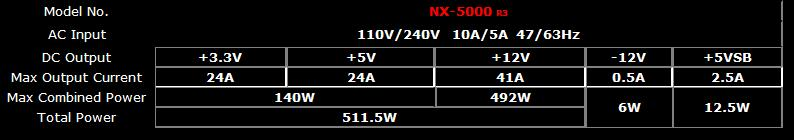
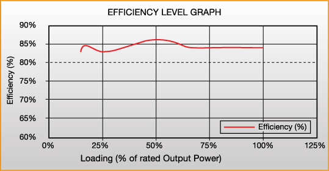
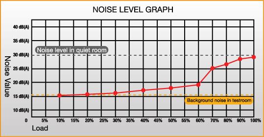
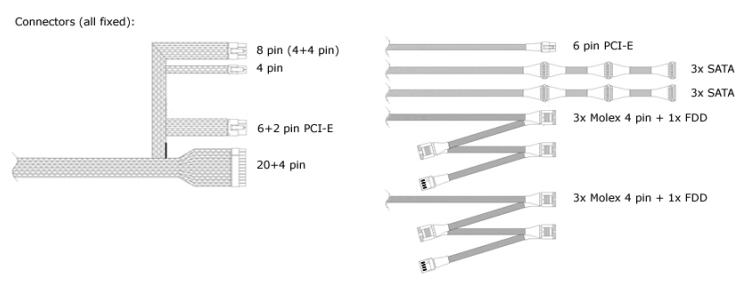
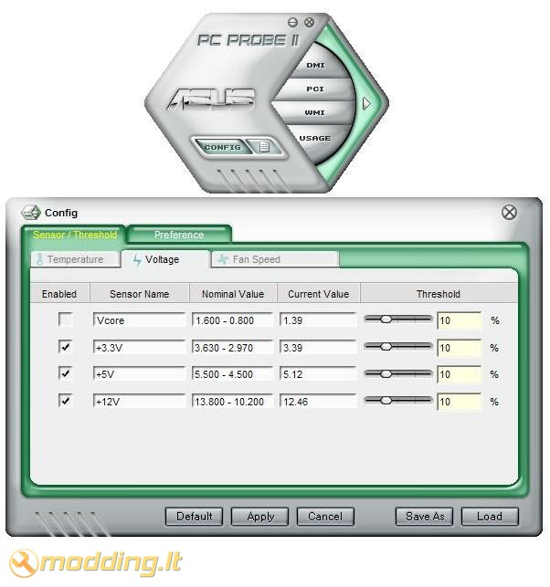

Nexus NX-5000 R3 maitinimo blokas
Nexus NX-5000 R3 - tai 530 W galingumo maitinimo blokas, kuris atitinka 80Plus Bronze standartų reikalavimus ir jo efektyvumas viršyja 82%. Šis modelis yra vienas naujausių NX modelių. Jo konstrukcija patobulinta, todėl dabar PSU yra mažesnių išmatavimų, o Real Silent 120mm ventiliatorius, skleidžiantis vos 15.5 dBA, turėtų užtikrinti tylų maitinimo bloko veikimą.
Žvilgsnis iš arčiau
Nexus NX-5000 R3 maitinimo blokas supakuotas dėžėje, ant kurios pateikiama visa pagrindinė informacija apie šį PSU: priekinėje dalyje pavaizduotas maitinimo blokas, galinėje dalyje aprašomos maitinimo bloko ypatybės, nurodytos charakteristikos bei jungčių sąrašas. Šoninėse dėžės dalyse - maitinimo bloko apkrovos/efektyvumo grafikas bei ventiliatoriaus skleidžiamų dBA priklausomybė nuo PSU apkrovos.
Pakuotės viduje randame:
- Nexus NX-5000 R3 maitinimo bloką
- 4 tvirtinimo varžtus
Komplekte nėra Power laido - likau nustebęs. Taip mėginama sumažinti gaminio kainą? Žinoma - jį galima įsigyti atskirai, tačiau ant pakuotės šio trūkumo gamintojas nenurodo, nes nepateiktas pakuotės turinio sarašas.
Specifikacijos
- Modelis: NX-5000 R3
- Tipas: ATX 2.2
- Išmatavimai: 150(ilgis) x 125(plotis) x 86(aukštis) mm
- Galia: 530 W
- Efficiency: 82%
- Ypatybės: active PFC, +12 V single rail
- Ventiliatorius: 120mm ball bearing, 15.5 dB(A)
- Connector: M/B 20+4 Pin Connector x 1; PCI-E 6+2 Pin Connector; 4 Pin Connector; 8 Pin Connector; 6 Pin PCI-Express Connector; SATA Connector x 6; 4 Pin Molex Connector x 6; Floppy connector x 2.
- Garantija: 3 metai

Grafike pavaizduota maitinimo bloko efektyvumo priklausomybė nuo jo apkrovos. Kaip matome - efektyvumas nenusileidžia iki žemesnės nei 82 % ribos net maksimaliai jį apkrovus. Esant 50 % apkrovai efektyvumas siekia ~87 %.

Šiame grafike pavaizduotas ventiliatoriaus triukšmo lygis esant skirtingiems maitinimo bloko aprovimams. Ventiliatoriaus apsisukimai reguliuojami automatiškai: kuo didesnė PSU apkrova - tuo didesniais apsisukimais veiks ventiliatorius. Esant minimaliam PSU apkrovimui 120mm ventiliatorius turėtų skleisti ~15 dBA - tai mažas triukšmo lygis. Apkrovus PSU 100 % ventiliatorius veikia maksimaliomis apsukomis bei skleidžia ~ 30 dBA.

Nexus NX-5000 R3 maitinimo blokas yra kiek mažesnis nei įprasta - jis 125mm pločio. Įprastai maitinimo blokai būna 150mm pločio. Maitinimo bloko korpusas nudažytas juoda matine spalva, panaudotas baltas mentes turintis 120mm ventiliatorius. Ventiliatorius apsaugotas juodomis grotelėmis. Maitinimo bloko galinėje dalyje išdėstyta jungtis maitinimo laidui bei On/Off mygtukas. Galinė sienelė - metalinis tinklelis.
Maitinimo blokas komplektuojamas su nemažu laidų kiekiu, kurie negali būti pasirinktinai atjungiami. Visi laidai įvilkti į juodai-baltą tinklelį, kištukai pakeisti juodais. Laidai ilgi, todėl įrenginius be vargo pasieks net ir Full tower tipo korpusuose.

Vidinėje PSU rėmo dalyje padarytos ventiliacinės angos. Aušinimui naudojamas Muhua MH1225M12D 12V 0.26A ventiliatorius - dėja šio ventiliatoriaus charakteristikų gamintojas nenurodo. Naudojant PSU ventiliatorius veikia tyliai, be pašalinių garsų.
Radiatoriai aliumininiai, prie pagrindo ištisiniai, nedideli. Panaudotas vienas kondensatorius bei du transformatoriai. PSU rėmas šiek tiek per liaunas - greičiausiai panaudotas minkštas metalas, o gal būt jis tiesiog per plonas. Tačiau kaip bebūtų - tai minusas, nes surenkant PSU gali kilti šiokių tokių nepatogumų.
Rezultatai
Testavimo sistema:
- CPU Cooler - Noctua NH-U12P SE2
- Case - Antec Mini P180
- Mainboard - Asus M2N68-AMSE2
- CPU - AMD ATHLON 64 X2 Dual-Core 5000+ AM2 (65W)
- RAM - Corsair DDR2 KIT 2X1G 800MHZ TWIN2X2048-6400 G
- HDD - SEA BARRACUDA 160GB 7200rpm
- PSU - Nexus NX-5000 R3
- Case Fans - Noctua NF-S12B FLX 120mm (1200rpm, 100.6 m³/h, 1.31 mm H2O), Antec 200mm TriCool (400rpm, 39 CFM)
Pateikiu Nexus NX-5000 R3 maitinimo bloko įtampų dydžius, užfiksuotus PC Probe II V1.04.74 programa. Stebint šį maitinimo bloką PC Probe II V1.04.74 programa, per valandą nebuvo užfiksuotas nė vienas didesnis nei 2 % įtampos šuolis.

Išvados
Pliusai:
- ilgi laidai
- mažesnio pločio: 125mm vietoje standartinių 150mm
- baltas ventiliatorius, juodi kištukai ir įvilkti laidai - stilingai atrodantis
- Real Silent 120mm ventiliatorius veikiantis 15.5 dB(A) neapkrovus PSU
- single +12V rail
Minusai:
- komplekte nėra Power laido
- liaunas rėmas
- plonas dažų sluoksnis - lengvai braižosi
Nexus NX-5000 R3 maitinimo blokas - geras pasirinkimas vidutinio galingumo sistemoms. 82% efektyvumo maitinimo blokas, turintis +12 V single rail bei tylų 120mm ventiliatorių, bei esantis mažesnio pločio nei įprasta (125mm) - gali būti geru pirkiniu komplektuojant HTPC ar Mini tower tipo sistemas, kadangi ten sutaupyti 2.5 cm gali daug reikšti. Kalbant apie šio bloko blogasias puses galėčiau paminėti kiek per liauną rėmą bei ploną dažų sluoksnį. Džiugu, kad šis maitinimo blokas prieinamas Lietuvos pirkėjams - jo kaina ~230 Lt.
Modding.lt komanda dėkoja Dennis van Driel iš www.nexustek.nl už apžvalgai suteiktą produktą.
Jei norėsite pakomentuoti mano straipsnį arba pareikšti savo nuomonę, apsilankykite Modding.lt forume.


{kind=link}
{kind=link}
{kind=link}
{kind=link}
{kind=link}
{kind=link}
{kind=link}
{kind=link}
{kind=link}
{kind=link}
{kind=link}
{kind=link}
{kind=link}
{kind=link}
{kind=link}
{kind=link}
{kind=link}
{kind=link}
{kind=link}
{kind=link}
{kind=link}
{kind=link}